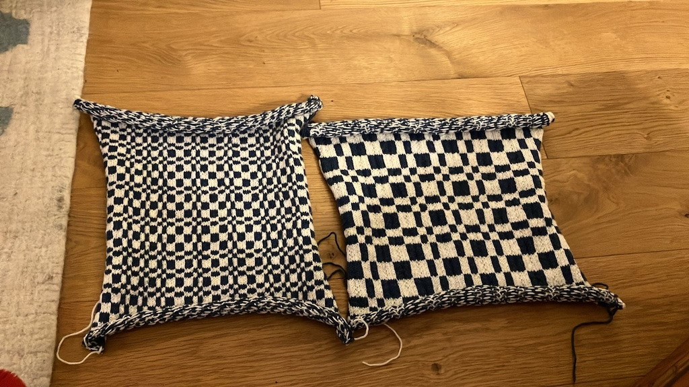

Some things in mathematics seem to appear everywhere. Numbers like $\pi$, $\mathrm{e}$, or the Fibonacci sequence often pop up when you are least expecting them to. Although not quite as ubiquitous, the Thue-Morse sequence is one of those things that once you know about it, seems to appear at the most unlikely turn.
The Thue-Morse sequence is an infinite binary sequence, which means it's made up of only zeros and ones. It starts $0, 1, 1, 0, 1, 0, 0, 1, 1, 0, 0, 1, ...$ There are many ways to define it, here's one:
$t_n$ is the number of bits modulo 2 in $n$, when $n$ is written in base 2
| $n$ | 0 | 1 | 2 | 3 | 4 | 5 | 6 | 7 | 8 | 9 | 10 | 11 |
| $n_2$ | 0 | 1 | 10 | 11 | 100 | 101 | 110 | 111 | 1000 | 1001 | 1010 | 1011 |
| $t_n$ | 0 | 1 | 1 | 0 | 1 | 0 | 0 | 1 | 1 | 0 | 0 | 1 |
So for example $11 = 8 + 2 + 1$ or $1011$ in base 2. The sum of the bits is 3, or 1 (modulo 2) so $t_{11} = 1$.
So—a bunch of zeros and ones, but why is this interesting? One application of the sequence is for fair turn taking in games or sports. The player going first (A) often has a slight advantage over the player going second (B), so the obvious alternating order ABAB, which is advantageous for A, can be made fairer by using the order ABBA, which is the first four terms of the Thue-Morse sequence. This scheme is used in tennis tiebreaks, for example.
The idea behind turn taking here is that instead of just repeating the pattern AB, we extend the pattern by first 'inverting' the original by swapping the players (to get BA), then adding to the original to get ABBA.
We can keep doing this. So ABBA is inverted to BAAB, and extended to get ABBABAAB.
Formalising this idea gives an alternate definition of the Thue-Morse sequence:
Let $T_i$ be the first $2^i$ terms in the Thue-Morse sequence. Then $T_0 = 0$, and for $i > 0$, $T_{i+1} = T_i \overline{T}_i$, where $\overline{T}_i$ is the negation of $T_i$, formed by interchanging 0's and 1's. So,
$$ \begin{align} T_0 &= 0 \\ T_1 &= 01 \\ T_2 &= 0110 \\ T_3 &= 01101001 \\ T_4 &= 0110100110010110 \\ ... \end{align} $$
The trouble with sequences is that they are one-dimensional. Which makes them a bit boring to visualise. Is there a way to plot them in two dimensions? In particular, I wondered if there was a natural way to map the Thue-Morse sequence to the plane.
There are, of course, many ways to do this. We could traverse the antidiagonals in a square matrix to turn a linear sequence into values filling the upper left triangle in the matrix. Or we could use a spiral path, starting in the centre and looping outwards anticlockwise in alternating horizontal and vertical directions, as made famous in the Ulam spiral.
I didn't try these though, as I found that using a Z-order curve had a nice connection with the Thue-Morse sequence.
A Z-order curve is a space-filling curve, which can be recursively generated as follows. Z-order curves can be defined for any number of dimensions, but here we are only concerned with the two-dimensional case. Start with a Z shape (numbers indicate the path ordering):
And repeat this shape in another Z shape.
And repeat this shape in another Z shape.
Z-order curves have applications in searching geospatial databases, since they preserve locality well (points nearby on the curve are often nearby in space).
Now let's write the sequence $T_i$ along a Z-order curve:
$T_0 = 0$
$T_1 = 01$
$T_2 = 0110$
$T_3 = 01101001$
$T_4 = 0110100110010110$
If $i$ is even then the pattern is a square of side $2^{i/2}$. If $i$ is odd then the pattern is a rectangle with height $2^{(i-1)/2}$ and width $2^{(i+1)/2}$.
I call this object TMZ. And $tmz_{i,j}$ is the value at column $i$ and row $j$ in the table (zero-based).
The definition of the Thue-Morse sequence when translated into the Z-order curve view, gives the following way of recursively generating the pattern.
Start with a single light cell (0), and proceed in two steps:
For the first step, we expand by adding a copy of the pattern to the right, highlighted in red:
Then we invert the new copy, so that light (0) and dark (1) are swapped. The original square is left unchanged.
For the second step, we expand by adding a copy of the pattern below, highlighted in red:
Then we invert the new copy:
Expand right:
Invert:
Expand down:
Invert:
The pattern expands to the right and down in an alternating fashion. At each step the pattern is copied, and inverted. It's like the turn-taking expansion discussed earlier, but in the plane.
Now let's examine the pattern a bit more closely. Look at the top row. It's the Thue-Morse sequence!
For example, for the 8x8 pattern generated by $T_6$, the top row is $T_3 = 01101001$.
This can be proved by induction.
Consider the TMZ pattern for a square with side $2^k$. For $k=0$, the table is just a single entry $TMZ=0$, which is the same as the Thue-Morse sequence $T_0=0$.
For the inductive step, start with a square with side $2^k$. Because of the way that Z-order curves are constructed, for a square with a side which is a power of two, the curve is continued by a copy of itself to the right, with the last point on the original curve at the bottom right of the square, joined to the first point on the copy at the top left of the new square.
The values in the original square on the left are $T_{2k}$, and because of the way TMZ is constructed, the values in the copy of the square on the right are the negation of $T_{2k}$, or $\overline{T}_{2k}$.
Furthermore, since the Z-curve offsets in the top row of the first square are the same as the Z-curve offsets in the top row of the second square, it follows that the values in the top row of the second square are the negated values of the values in the top row of the first square.
But this is just the recursive definition of the Thue-Morse sequence, hence the top row of TMZ is the Thue-Morse sequence. QED
But that's not all. The first column of the pattern is also the Thue-Morse sequence. The same argument applies, except for the inductive step in this case we copy the half square downwards:
We can take this even further. Every row and column is the Thue-Morse sequence or its inverse!
This follows from a similar inductive argument, combined with the observation that if the starting value in the Thue-Morse definition is 1 then you get the negated sequence. That is, $\overline{T}_0 = 1$ and for $i > 0$, $\overline{T}_{i+1} = \overline{T}_i T_i$
The fact that every row is either the Thue-Morse sequence or its inverse makes for a knitting pattern that is surprisingly straightforward to knit.

Knit the first row as the Thue-Morse sequence for as many stitches as you want. Then for each subsequent row, use the Thue-Morse sequence for the row number to decide if the row is the same as the previous one or its inverse, and knit accordingly.
I have also made an interactive knitting pattern generator available at https://tom-e-white.com/tmz/knitting-rect.html, to make it convenient to select the the size of the pattern and number of stitches in each square.
So far the arguments have been very geometric. Switching to a more algebraic viewpoint reveals another way of computing the TMZ pattern.
Z-order curves can be defined using something called the Moser-de Bruijn sequence: 0, 1, 4, 5, 16, 17, 20, 21, ...
These are the numbers appearing in the first row of the Z-order curve. If we write them in base 2 we can see the pattern:
$0_2$, $1_2$, $100_2$, $101_2$, $10000_2$, $10001_2$, $10100_2$, $10101_2$, ...
They are the numbers whose binary representation only has ones in the even powers of two. For example, $17 = 16 + 1 = 2^4 + 2^0$
If you double the values in the Moser-de Bruijn sequence, you get 0, 2, 8, 10, 32, 34, 40, 42, ... These numbers appear in the first column of the Z-order curve, and their binary representation only has ones in the odd powers of two:
$0_2$, $10_2$, $1000_2$, $1010_2$, $100000_2$, $100010_2$, $101000_2$, $101010_2$, ...
These two sequences can be used to decompose any number into its Z-order curve coordinates. Take 27 for example:
$$ \begin{align} 27 &= 16 + 8 + 2 + 1\\ &= 2^4 + 2^3 + 2^1 + 2^0\\ &= (2^4 + 2^0) + (2^3 + 2^1)\\ &= 17 + 10\\ &= mb_5 + 2mb_3 \end{align} $$
where $mb_i$ is the $i$th term in the Moser-de Bruijn sequence. So 27 appears at coordinates $(5, 3)$ on the Z-order curve.
Earlier we proved that the top row of TMZ is the Thue-Morse sequence, which we can write like this:
$t_{mb_i} = t_i$
Similarly, $t_{2mb_i} = t_i$, which follows because the left column of TMZ is also the Thue-Morse sequence.
Since the TMZ pattern is the Thue-Morse sequence on a Z-order curve, the Moser-de Bruijn sequence can be used to define TMZ algebraically:
$$tmz_{i,j} = t_{mb_i + 2mb_j}$$
We can use this to prove the following theorem, which states that the TMZ pattern at $(i, j)$ is the even parity bit of $i \oplus j$ (where $\oplus$ is the exclusive or operator):
Theorem: $$tmz_{i,j} = t_{i \oplus j}$$
First we need a lemma:
$$t_i \oplus t_j = t_{i \oplus j}$$
To prove the lemma, consider the number of one bits in $i$ and $j$, and look at the effect of the $\oplus$ operator.
Call the number of one bits in $i$, $b(i)$. If there are $n$ bits which are both 1s in $i$ and $j$, then
$$ \begin{align} b(i \oplus j) &= b(i) - n + b(j) - n\\ &= b(i) + b(j) - 2n \end{align} $$
Illustrating this with an example, if $i=101_{2}$ and $j=011_{2}$, then there is $n=1$ bit which are both 1s (the least significant bit), and
$$b(i \oplus j) = b(110_{2}) = 2$$
and$$b(i) - n + b(j) - n = b(101_{2}) - 1 + b(011_{2}) - 1 = 2 - 1 + 2 - 1 = 2$$
Now consider the parity combinations of $b(i)$ and $b(j)$. If both are even then since $2n$ is even $b(i \oplus j)$ is even. If both are odd, then $b(i \oplus j)$ is even. And if one is even and the other is odd, then $b(i \oplus j)$ is odd. This is summarised in the following table, along with values for $t_i$, $t_j$, $t_{i \oplus j}$ which are 0 if $b(x)$ is even and 1 if it is odd (since $t_x = b(x) \mod 2$).
| $b(i)$ | $b(j)$ | $b(i \oplus j)$ | $t_i$ | $t_j$ | $t_{i \oplus j}$ | $t_i \oplus t_j$ |
|---|---|---|---|---|---|---|
| even | even | even | 0 | 0 | 0 | 0 |
| even | odd | odd | 0 | 1 | 1 | 1 |
| odd | even | odd | 1 | 0 | 1 | 1 |
| odd | odd | even | 1 | 1 | 0 | 0 |
The final column of the table shows $t_i \oplus t_j$, which is the same as $t_{i \oplus j}$ in each case, which proves the lemma.
Now we can prove the theorem:
$$ \begin{align*} tmz_{i,j} &= t_{mb_i + 2mb_j} && \text{by definition} \\ &= t_{mb_i} \oplus t_{2mb_j} && \text{interleaving (see below)} \\ &= t_i \oplus t_j && \text{by identities above} \\ &= t_{i \oplus j} && \text{by the lemma} \end{align*} $$
A note on the 'interleaving' step: $mb_i$ has ones only in the even binary digits, and $2mb_j$ only in the odd binary digits. Therefore, they can be separated and the Thue-Morse value (viewed as the even parity bit) calculated for each one independently. The two values are then combined using the exclusive or operator to get the same result.
Another name for $i \oplus j$ is Nim-sum, since it is how two Nim heaps can be combined (A003987 in OEIS). So, in conclusion, the even parity bit of Nim-sum is the same as the Thue-Morse sequence on a Z-order curve.
You see, the Thue-Morse sequence really does turn up in the most unexpected places. And it even makes a nice cushion cover.